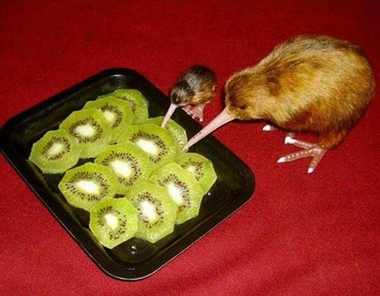
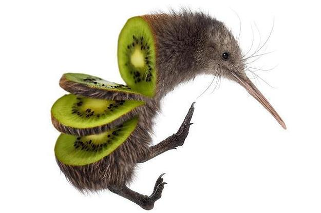
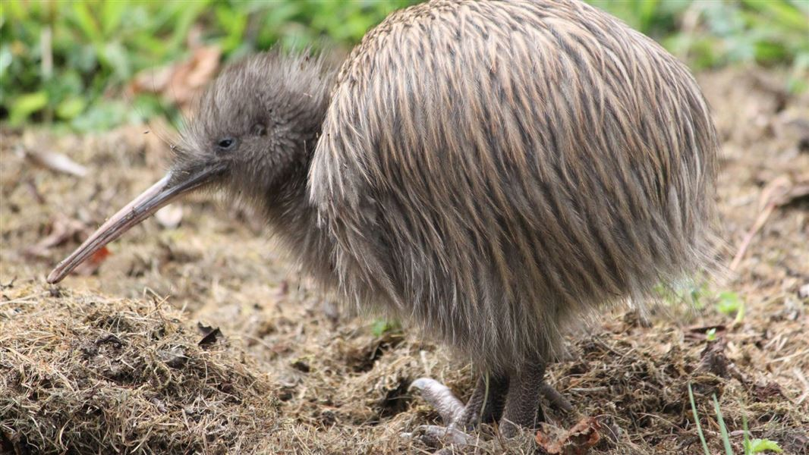
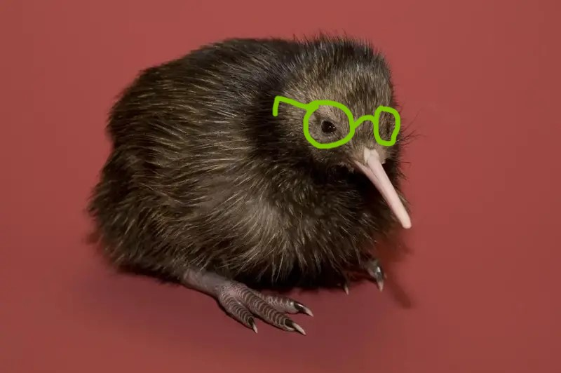
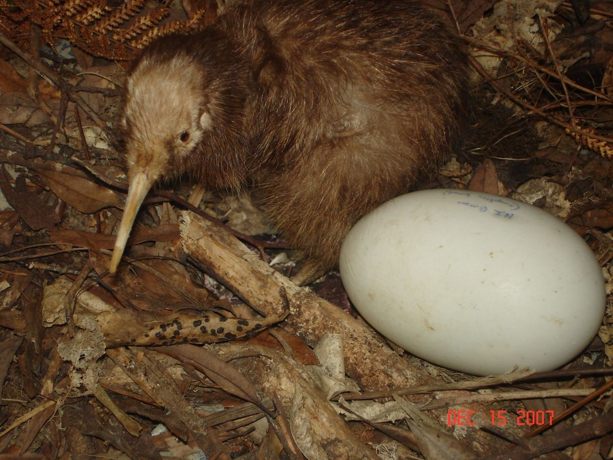
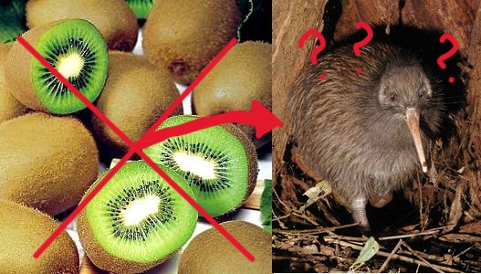

Você está antenado nas últimas atualizações do querido planeta Terra? Não? Então se ligue nas informações quentinhas!

Diferença número 6
Os kiwis (Apteryx australis) são seres que só podem ser encontrados na Nova Zelândia. Dito isso, pode-se imaginar que sua existência esteja em constante risco, diferente do outro kiwi (Actinidia) que, apesar de ser originário da China, é plantado em diversos cantos do planeta, desde as montanhas do sudeste chinês aos terrenos de Campos de Jordão.

Diferença número 5
Os kiwis (A. australis) costumam encontrar um parceiro durante sua vida e manter essa relação monogâmica até 20 anos. O segredo de uma relação saudável está em ter um olfato tão fenomenal que além de servir para caças de pequenos insetos, larvas e frutas, consegue sentir o cheiro de problema e prevenir uma briga antes que ela aconteça. Por outro lado, o kiwi (Actinidia) não usufrui da mesma habilidade, tendo uma instabilidade característica em seus relacionamentos e por essa razão, desenvolvendo os dois sexos em um único corpo e adotando a reprodução assexuada.
Diferença número 4
O kiwi (Actinidia) é rico em sais minerais como potássio, ferro, cálcio, magnésio e zinco. Para aqueles que não sabem o que isso significa no mundo alimentício terrestre, é como se a renda bruta do kiwi fosse equivalente a U$500 mil bimestrais. Sendo assim, ele vive como uma espécie de planta trepadeira que precisa de atenção e manutenção constantes. Enquanto isso, o pequeno kiwi (A. australis) costuma viver em situações precárias já que não consegue voar e precisa se habituar a viver no chão. Eles buscam viver em covas, principalmente pela sensibilidade de seus pequenos olhos, e normalmente fogem da luz do dia para não encontrar com conhecidos.

Diferença número 3
Como mencionado acima sobre os pequenos olhos do kiwi (A. australis), esses animais tendem a ter problemas oculares mesmo fora do estresse ambiental. Lesões assim são tão comuns que não é difícil encontrar um exemplar cego por aí. Já o kiwi (Actinidia), por ser rico em vitamina A (retinol), é um importante auxílio a renovação e preservação de tecidos oculares. Ele é uma ótima escolha na jornada contra cegueira!

Diferença número 2
Os kiwis (Actinidia) são muito silenciosos se comparados aos kiwis (A. australis). Talvez isso se dê pelo fato de que os kiwis (A. australis) sejam responsáveis pelos ovos mais desproporcionais da natureza comparados a seu tamanho (chegam até a 20% de sua massa corporal). A produção dele se dá em cerca de 30 dias na fêmea, que passa por um grande estresse fisiológico, seguido de um período de incubação de 63 a 90 dias feito pelo macho. A gema desse ovo, quando convertida no saco vitelino após o nascimento, garante comida por 10 dias ao filhote e dá essa segurança a ele antes de sair por aí para viver aventuras. O kiwi (Actinidia), por sua vez, tem sementes proporcionais a seu tamanho e que costumam germinar dentre 12 a 40 dias.

Diferença número 1
Para todos aqueles que leram até aqui, espero que essa informação, mais difícil de digerir do que o restante, seja de grande valor e utilidade. O kiwi (Actinidia) é uma fruta e o kiwi (A. australis) é um animal. Espero que isso esclareça todas as dúvidas e fixe em sua mente a principal diferença entre os kiwis da Terra.

Ajude os kiwis!
Sentiu vontade de saber mais ou ajudar os kiwis? Para isso basta clicar aqui!